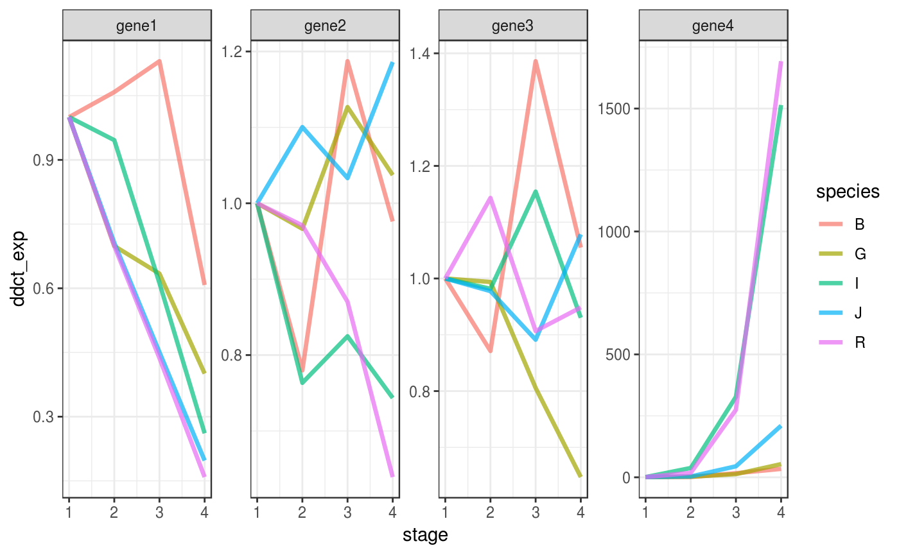

scale-ddct.RmdHere, you will learn how to scale, inspect and visualize the gene expression data by centering the mesurement on one single experimental condition (in what is known as the \(2^{ - \Delta \Delta Ct}\) method).
This method is useful when you want to take one experimental condition as reference. For example, the start time when analyzing time series.
library(fluidgr)
library(magrittr)
library(dplyr)
library(stringr)
library(ggplot2)
library(forcats)
library(scales)
library(devtools)
library(purrr)We use the scaled_fluidigm dataset to illustrate how to apply the \(2^{ - \Delta \Delta Ct}\) method.
data(scaled_fluidigm)scale_ddct()
Using the \(2^{ - \Delta \Delta Ct}\) method on large scale qPCR experiments is often not straightforward, because those experiments are often multivariate.
For example, the scaled_fluidigm is measures the expression of four genes (encoded in the column target_name) in the combination of two variables:
species .stage.See below
scaled_fluidigm %>%
select(target_name, species, stage) %>%
map(unique)
#> $target_name
#> [1] "gene1" "gene4" "gene2" "gene3"
#>
#> $species
#> [1] "J" "G" "B" "R" "I"
#>
#> $stage
#> [1] "N2" "N1" "N4" "N3"We want to split this dataset by species and gene and compare directly only the measurement in the stage variable. (i.e. we want to scale and compare gene expression in the four stages, for every gene in every species separately)
Moreover, we want a specific stage to be used as reference. The mean in that stage will be set to 1 and expression in every other stage will be expressed in relative terms to that. Let that stage be “N1”
You achieve this using the function scale_ddct() (ddct stands for delta delta Ct). scale_ddct() takes four arguments
.data a fluidigm dataset... the dots must be filled with all the columns of .data that you want to use to split it.compare_var the column of data used for direct comparison, which must store the value as reference.center_on the value used as reference, its mean expression will be set to 1.ddct_flluidigm <-
scaled_fluidigm %>% # the .data parameter is filled by the pipe
scale_ddct(
species, target_name, # fill the dots ... with the columns that you want to use to split .data
compare_var = stage, # direct comparison
center_on = "N1" # reference expression, set to 1
)Using this function might be confusing because it uses dots ... to capture any number of column names to split the data. Remember that the arguments after the dots (compare_var and center_on) must be named.
The output of ddct_fluidigm() can be plotted directly with ggplot2.
ddct_flluidigm %>%
ggplot(aes(x = stage,
y = ddct_exp,
group = species,
colour = species)) +
# it might be complicated to add a line that connect means
# across stages,
# because stages are encoded as a categorical variable,
# we must turn them into numeric
stat_summary(aes(x = stage %>%
as.factor(.) %>%
as.numeric(.)),
fun.y = mean,
geom="line",
size = 1.2,
alpha = .7,
linejoin = "round") +
# implement facetting with independent y values
# for each genes, since expression values are
# not comparable across genes
facet_wrap(facet = "target_name",
scales = "free",
nrow = 1) +
theme_bw() 